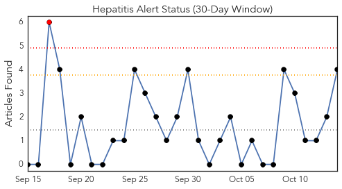
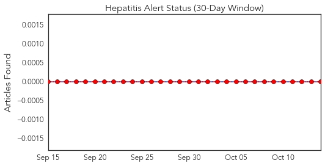
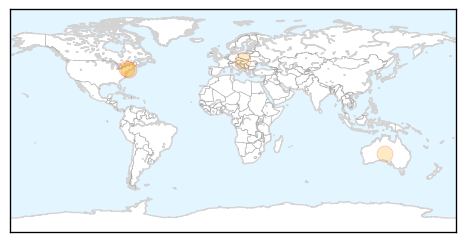
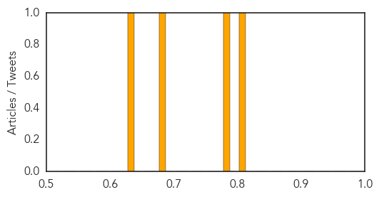

Toggle navigation
Early Warning
Daily Alerts
Hepatitis
Oct 14, 2014
Compare to:
-
Dengue Fever
Hemmorhagic Fever
Mold/Fungal Infection
Influenza
Meningitis
Pertussis / Whooping Cough
Middle East Respiratory Syndrome
Cholera
Chikungunya
Yellow Fever
Bubonic Plague
West Nile Virus
Swine Flu
Ebola
Measles
Unknown
Mumps
30 Day Trends
Web: 1
alerts
, 0
warnings
Twitter: 0
alerts
, 0
warnings
Top Articles:
0.801
Rats of New York and the diseases they carry
0.788
Rats of New York and The Diseases They Carry
0.676
Scientists Study New Yorks Rats and the Diseases They Carry
0.631
Dozens of hepatitis A cases appear in Slovakia - PRAGUE POST
Top Tweets:
No tweets found for Oct 14, 2014
Web/News Articles

Tweets

Article Locations

Article Confidences
